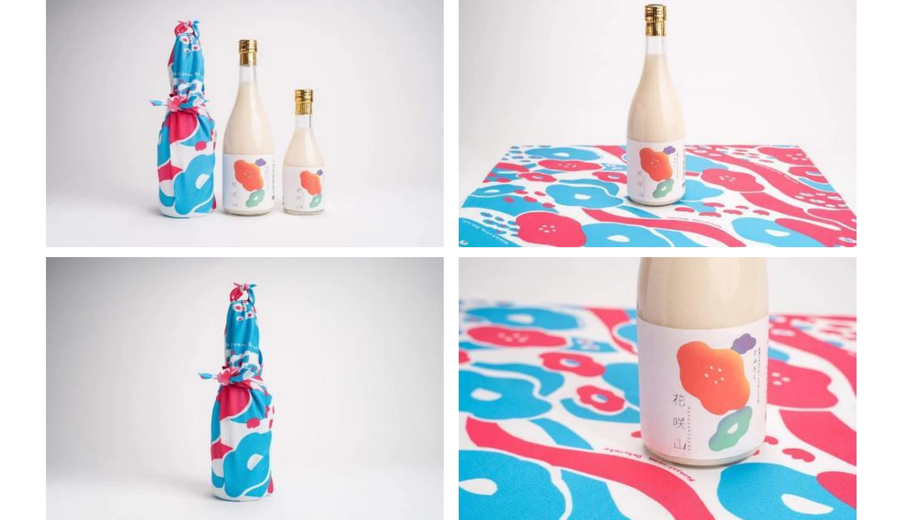

食・農 / 埼玉
どぶろく「花咲山」

PROJECT INFORMATION
横瀬町そばの会のどぶろく「花咲山」。ブランディングとパッケージデザイン等の制作実績です。
01 / 背景とテーマ
輪郭を与える
横瀬町は、埼玉県で初めてのどぶろく特区です。その第一号として、地元のそばの会が仕込んだどぶろくが生まれました。名前の「花咲山」は、町に実在する山の名前。この酒は、その山のふもとでつくられています。込めたのは、横瀬まで来て呑んでほしい、というメッセージでした。
02 / SCHEMAの担当範囲
全体を整える
SCHEMAはブランディングとパッケージデザイン、法被やノボリまでを担当。どぶろくは男性向けの酒として扱われがちですが、ここでは女性をメインターゲットに据えました。瓶に添えたのは、色とりどりの花を散らした風呂敷です。ひろげればそのまま敷物になり、花咲山を眺めながら一杯やれる。売り場での見え方ではなく、町のどこかで包みをひらく場面から逆算して設計しています。日本酒のパッケージの作法にはあえて乗らず、棚で圧倒的に目立つほうを選びました。
03 / 取り組みの視点
枠組みをひらく
このどぶろくは微発泡です。だから配送に向かず、オンラインでは売りにくい。弱点のように見えますが、裏を返せば「ここへ来ないと呑めない」ということでもあります。その制約を、来てもらう理由の側に置きかえました。地域の営みを、町の外へ運ぶのではなく、町へ人を呼ぶ器としてひらいた取り組みです。